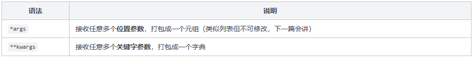

Python 基础入门(3)
函数
上一篇我们学了 Python 的基础语法，所有代码都是从上往下顺序执行的。但真实的程序不可能把所有逻辑都写成流水线，我们需要把代码拆分成一个个函数，每个函数负责一件事，需要的时候调用就行。
这篇除了函数本身，还会讲 Python 中非常实用的 lambda 表达式、列表推导式、字典推导式等语法糖。这些东西第一次见可能觉得有点花哨，但用熟了你就会发现它们能大幅简化代码，刷算法题的时候尤其好用。
函数定义与调用
函数就是一段可以重复调用的代码块，给它一个名字，需要的时候调用就行。
Python 用 def 关键字定义函数：
注意 Python 不需要声明参数类型和返回值类型——因为 Python 是动态类型语言，变量的类型在运行时自动确定。你传什么进去，它就是什么类型。
还有一点，Python 是用缩进来划分代码块的。def 下面缩进的部分就是函数体，缩进结束函数就结束了。一般用 4 个空格缩进。
参数
默认参数
定义函数时可以给参数设置默认值，调用时如果不传这个参数，就用默认值：
默认参数有个规则：有默认值的参数必须放在没有默认值的参数后面。你想想就知道了，如果放前面，Python 就分不清你传的值是给谁的。
可变参数 *args 和 **kwargs
有时候你不确定函数会接收多少个参数，Python 提供了两种方式来处理：

*args 和 **kwargs 只是约定俗成的名字，你也可以叫 *numbers 或 **options，关键是前面的 * 和 **。
说实话，你自己写代码的时候用到 *args 和 **kwargs 的场景不会太多。但看别人的代码时经常会遇到，所以要认识它们。
多返回值
Python 的函数可以返回多个值，本质上是返回一个元组，然后用拆包的方式接收：
_ 是一个约定俗成的”我不需要这个值”的写法，Python 不会报错，但实际上 _ 也是一个合法变量名，只是我们用它来表示”这个值我不关心”。
多返回值在刷算法题时很实用，比如一个函数既要返回最大值，又要返回最大值的下标，用多返回值就很方便。
lambda 表达式
lambda 是一种创建匿名函数的简洁写法，适合写那些只用一次的简单函数。
语法：lambda 参数: 表达式
你可能会想：这跟普通函数有啥区别？单独用确实没什么区别。lambda 真正的用武之地是作为参数传递给其他函数，最经典的就是排序：
sorted 函数的 key 参数接收一个函数，这个函数告诉 sorted “用什么规则来比较元素”。用 lambda 写一行就搞定，非常简洁。
如果不用 lambda，你就得单独定义一个函数然后传进去，多写好几行。刷算法题时 sorted + lambda 的组合用得非常频繁，一定要熟练掌握。
列表推导式
列表推导式（List Comprehension）是 Python 中非常有特色的语法，能用一行代码生成一个列表。看完你就知道为什么大家都说 Python 代码简洁了。
基本语法
语法模板：[表达式 for 变量 in 可迭代对象]
意思是：遍历可迭代对象，对每个元素执行表达式，把结果收集成一个新列表。本质上就是 for 循环 + append 的简写。
带条件过滤
列表推导式还可以加上 if 条件，只保留满足条件的元素：
语法模板：[表达式 for 变量 in 可迭代对象 if 条件]
先过滤（if），再变换（表达式），最后收集成列表。一行代码干了三件事，很爽吧？
嵌套推导式
列表推导式可以嵌套，最常见的用途是创建二维列表：
这里要特别注意一个坑：创建二维列表不能用 [[0]*4]*3 这种写法。因为 *3 复制的是引用，三行指向的是同一个列表对象，修改一行其他行也会变。用列表推导式 [[0 for j in range(4)] for i in range(3)] 才是正确的做法，每行都是独立的列表。
这个坑在刷算法题时非常容易踩，一定要记住。
字典推导式 / 集合推导式
既然列表有推导式，字典和集合自然也有。语法几乎一样，只是把 [] 换成 {}。
字典推导式用 {k: v for ...}，有冒号；集合推导式用 {x for ...}，没冒号。区别就在这。
另外代码中用到的 zip 函数很实用，它能把两个列表”拉链式”配对，后面刷题经常用到。
小结
这篇讲了 Python 函数和几种实用的语法糖：
函数让你把代码拆成可复用的小块，def 定义，调用时传参就行。lambda 是匿名函数的简写，配合 sorted 排序非常方便。列表推导式让你一行代码生成一个列表，加上 if 还能过滤。字典推导式和集合推导式同理。
关键点回顾：
- 默认参数必须放在普通参数后面，
*args接收位置参数，**kwargs接收关键字参数 - 多返回值本质是元组拆包，用
a, b = func()接收 sorted(list, key=lambda x: ...)是最常用的自定义排序方式- 列表推导式
[表达式 for x in 可迭代 if 条件]能大幅简化代码 - 创建二维列表用推导式
[[0]*n for _ in range(m)]，不要用[[0]*n]*m下一篇我们来学 Python 的常用数据结构，包括list、tuple、string、dict、set，以及刷题常用的deque和heapq。